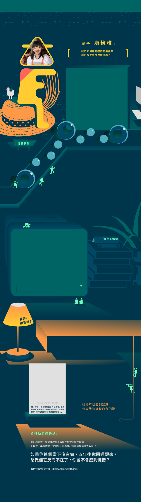
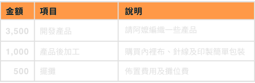
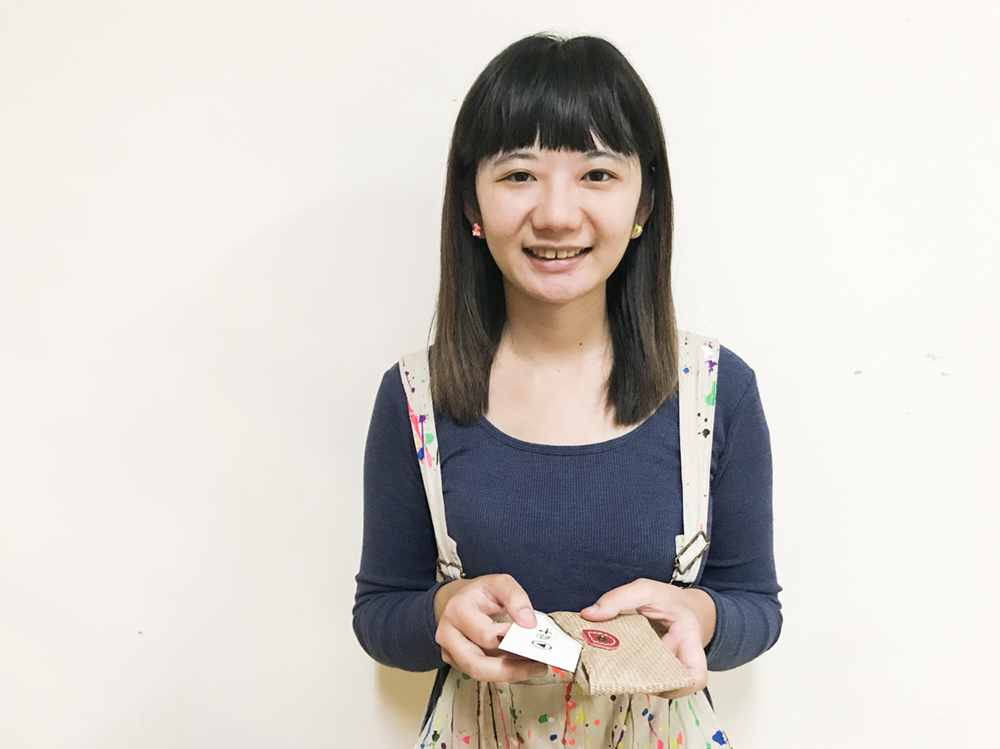

建構以生產者為本的在地x文化x設計生態圈——藺子
「藺子」品牌工作室於 2016 年 11 月正式成立，希望藉由設計，加值、帶動產業發展，重現臺灣傳統藺編工藝手感之美。藺子的創辦人怡雅自2009年起，因為大學的研究計畫投入苑裡社區。有感於過去從事藺編的女性師傅們年紀越來越大，傳承方面又缺乏系統性的教學方法，藺編技術即將面臨失傳的危機，怡雅下定決心投入在藺編工法的紀錄上，並規劃長期課程供社區中生代在家婦女或有興趣的民眾學習，期望能用設計打開產業，以教學連結跨世代人才，最終讓藺編這項技術得以傳承，更重要的是，讓隨著產業逐漸凋零的阿嬤世代重新認識到：原來自己的手藝是那麼有價值。
點擊不同的軌跡查看行動夥伴的故事！
行動軌跡 - Action 1
2009年，怡雅因參與大學專題研究而走入苗栗苑裡的山腳社區，她回憶第一次認識到藺草這個材料是在當地的媽祖廟，四個阿嬤坐在地上，巧手細緻地用藺草在編包包、做帽子，不僅作工精緻，成品更是美觀實用，她不禁納悶，為什麼台灣有這樣的工藝，過去卻鮮為人知？同時感慨這麼好的作品其實不輸給很多知名的品牌，但是這個產業只能被關在苑裡，阿嬤編三天才能完成的帽子，以500-600元一頂的價格賣給遊客，完全不符合阿嬤的勞動成本，卻還會被質疑價錢不合理。
專題結束後，怡雅開始思索除了做美觀的設計外，能再為藺草這個產業多做些什麼？大三升大四的暑假，她興起一個念頭：「我想看看有沒有機會回到苑裡，去做一些事情」，於是，他找到青年署當時的一個計畫，鼓起勇氣報名，經過幾番面試後，終於以計畫成員的身分回到當初做研究計畫的山腳社區。
行動軌跡 - Action 2
過去研究計畫的時間有限，每次一個多小時的陪伴，只能看到阿嬤做重複編織的動作，並不知道藺編其實要回溯到曬草的步驟，才能完整了解背後細膩的作業流程。怡雅當時從設計系學生的角度出發，能想到的，只有設計一個很厲害的產品，但沒有深入思考這個東西的成本、人力，還有消費者真的會買單嗎？
於是研究所期間，怡雅在老師的協助和推薦之下帶了十個學弟妹入駐村子，進一步瞭解了在地社區經營的困難；他們沒有專業的能力策畫行銷與販售，因此每做一個就賠一個，且當地藺編的專業工作者正逐漸老化，技術傳承困難。研究所畢業後，怡雅受社區發展協會葉理事長的努力和熱情所感召，雖然幾經家人反對，仍是毅然決然地放棄攻讀博士的機會，隻身投入社區，跟著理事長東奔西跑，演講、展覽、比賽、補助計畫的撰寫樣樣包辦。最終，苑裡的藺草在日、韓、德、泰等國的展覽都大放異彩。
行動軌跡 - Action 3
然而，政府的計畫多所限制，怡雅開始反思，如果自己永遠待在協會或非營利組織，一旦政府的抽掉補助，那還剩下什麼？藺子能夠繼續下去嗎？這個計畫團隊裡的年輕人如果沒有了工作，是不是又要回都市或流離到其他地方？
觀察到在地產業傳承的問題，所以她總是在計畫書裡強調人才培育的重要性，然而，審核的承辦人員似乎更在乎營業額和績效，而在時間跟資源有限的情況下，人才培育跟推銷產品的兩難便被綁死在政府計畫的框架下，同時鎖住了怡雅的創造力。
幾經考慮之後，她決定從社區發展協會離職，這時恰好經友人引薦，開始關注一棟老街上正在整修的房子；行動力超強的她，即便老屋的水電都還沒牽好，她就先用過去攢下的所有薪水簽訂租約，獨自創立「藺子」這個品牌，從給予阿嬤更合理收購價格的初心出發，一步一步的建構品牌、行銷、工法記錄和在地人才培育的健康生態鏈，讓藺編這個產業能繼續傳承下去。
2009.9 遇見藺草
因為一個設計專題而第一次認識藺草，看到阿嬤在編織深受感動
2013.8 生涯抉擇
畢業前夕，知道苑裡社區急需年輕人返鄉，義無反顧地決定留下
2016.8 人生轉捩點
一路提攜我的社區長輩突然過世，我離職了，一切都很茫然
2016.10 一個衝動
偶然發現老街上的百年老屋，衝動之下承租下來，付了房租、接了水電就沒錢了
2017.2 低潮
過年沒錢包紅包給家人，工作室也沒錢裝修及開幕，差點就這樣放棄
2017.7 正式開幕
工作室正式開幕，來了好多支持者，給我好多力量
Q：傳統文化保存是一個長期抗戰，是什麼支持妳能繼續做下去呢？
A：
我其實內心只想著一件事情：我要這些阿嬤阿姨們都可以覺得做藺草很快樂，所以我這一路便秉持著這樣的初衷，一開始發展品牌和產品，跟阿嬤收購的時候我都不停告訴自己，跟阿嫲收購的價格一定要合情合理，因為這個產業的行情被打得太低，過去阿嬤都像是被壓榨。
我想做的是給她們一個合理的收購價，就只是這件事情而已。當然，過程中會有很想要放棄的時候，但我會想，我如果不做了，這些阿嬤就沒有錢，他們的東西就沒有人跟她們買了，所以我不能夠棄大家於不顧。包含我自己，就算身上只剩下幾百塊，只要阿嬤拿東西來，我就會給付現金，因為對她們來說，她們收到現金就會獲得成就感，這並非建立於錢的多寡，而是今天她這個年紀仍有能力賺自己的生活費，這是支持她們繼續下去的動力之一，於是我很堅持這件事情。
Q：產業的傳承需要很多新生代投入，你是怎麼讓更多人投入進來的？
A：
因為想給阿嬤合理的收購價，產品價格就會訂得比別人高，所以行銷跟品牌是我一定要做得，再者，阿嬤們年紀大了，中間需要有人來承接這件事情，所以我要進行作人才培育，而人才培育這件事情需要教學模式，教學模式就要回歸到我要去做傳統工法的記錄。我們希望影響的是不只是編藺草這件事情，而是改造整個藺草相關產業，並帶給當地更多就業機會。
我覺得當你很想做一件事情的時候，就會出現很多人來幫你。像我的通路也只告訴我一件事情，只要妳是真心對阿嬤好，一直以來沒有變，那我們就願意賣妳的商品。很多時候都是因為自己的堅持，才會有那麼多人出現、參與。
所以，如果在你的心裡正有一個小小的想法醞釀著，我覺得你就放膽去做，不用先考量究竟有沒有錢或人脈，因為這些事情都是在你真的做了之後，才會一一跑出來；像人脈，沒有做怎麼會有人脈，若擔心沒有錢，更要實際地跨出這一步，才知道這件事情到底能不能繼續做下去，如果你只停留在思考，那就永遠只在你腦海裡。
Q：藺編產業沒落了這麼多年，作工法記錄時，你們怎麼找回這些身懷絕技的長者？
A：
社區發展協會的理事長，我都叫他葉老師，跟我講了一個讓我覺得很感動的故事，也是我想要繼續做藺子的原因。他說，民國九十五年，他曾想過如何把藺草找回社區，因為他知道的那些媽媽們，會編的就只有這幾個，所以他想到一個方法。
他想要辦一個比賽，那個比賽叫愛藺工藝獎，讓會編織的媽媽把他最厲害的作品拿出來比賽，比賽有獎金，還會做一本紀念冊，上面有阿嬤的照片跟介紹。在那個頒獎典禮上，他看到了很多阿嬤的小孩和孫子，陪她一起來參加頒獎典禮，那個過程中，很多年輕人或他們的下一代，第一次知道自己家裡的長輩會編藺草；過去大家不知道，阿嬤也不會特地講，因為她覺得那是女工做的事情，並不值得拿出來講。
所以在比賽當中，我們看到好多阿嬤想盡辦法每年生出一件作品，有些甚至會很計較，說:「為什麼她是第一名我是第二名，我不要比了」，開始有這種好勝、求勝的心。社區透過這個比賽找到了很多還擁有編織技術的婦女，也激勵他們繼續做這件事情。
Q：在社區投入這麼長的時間，有沒有什麼讓人印象深刻的人事物？
A：
我們社區有位九十四歲的阿嬤，七歲學習編藺草，一路做到九十四歲。她最擅長編名片夾，前三四年的時候大家搶著要，因為作品真的非常細緻又端正，可是這兩年她的年紀太大了，名片夾常常不小心做的太大、太高，名片會掉下來或歪掉，漸漸地，除了我之外，就沒有其他人跟她收購了。她的兒子為了讓他媽媽繼續做下去，就會把她的作品拿走說這有人要，但是其實是拿去送人，為的是不要讓她覺得沒有人跟她收購了。
還有一位86歲的阿嬤，有一天她的孫女來找我，說她的阿嬤很會編草席，可是最近年紀大了常常編錯，也會編的比較粗；帽席行以前還會收，但現在因為草席賣的不好，帽席行就叫阿嬤不用再做了。那阿嬤其實滿失落的，因為她編了一輩子，她覺得如果沒有人收購，生活好像就沒有什麼目標。我跟這位孫女說，阿嬤的草席我全部先收購，接著思考如何轉換成大家可以接受的產品。經過設計，我們把阿嬤的草席變成側背包、鉛筆盒、化妝包，這樣的作品其實不完美，上面有編錯的痕跡，但我們會告訴消費者，她編錯，就是獨一無二的。指出編錯的地方，大家其實就會接受這件事情；成品編織得比較粗，但價格反而更可以讓年輕人接受，這成了年輕人認識藺草的第一步。
每次商品銷售非常好，我都會跟阿嬤說：阿嬤你可以繼續做下去沒有問題，妳可以一直做下去，因為我們會一直幫妳賣。
Q：用 6000 元採取的第一步行動
A：
用第一筆資金跟阿嬤收購一些小產品，後加工精心挑選的布料及配件，進行第一次的市集擺攤。

Q：為什麼會這樣分配
A：
透過擺攤可以觀察消費者的反應，並且獲取產品改良的靈感。在資金不多的情形下，可以先用少量產品賺取下一筆的行動金。

初心就是妳不能放棄的理由

傳承，是滴水穿石

阿嬤盃，藺編的奧林匹亞

讓人感覺自己有價值，就是最有意義的時刻

用 6000 元把想法變行動
A：哆啦A夢，產業過程中常常遇到很多問題，發想藺草的可能或阿嬤遇到困難來求助時，我們常常要生出他們需要的東西
猜猜看，行動夥伴隨身的包包裡有些什麼法寶？點擊揭曉
A：出貨
A：統合跟傳達
A：苑里
A：職人



 卡通
卡通